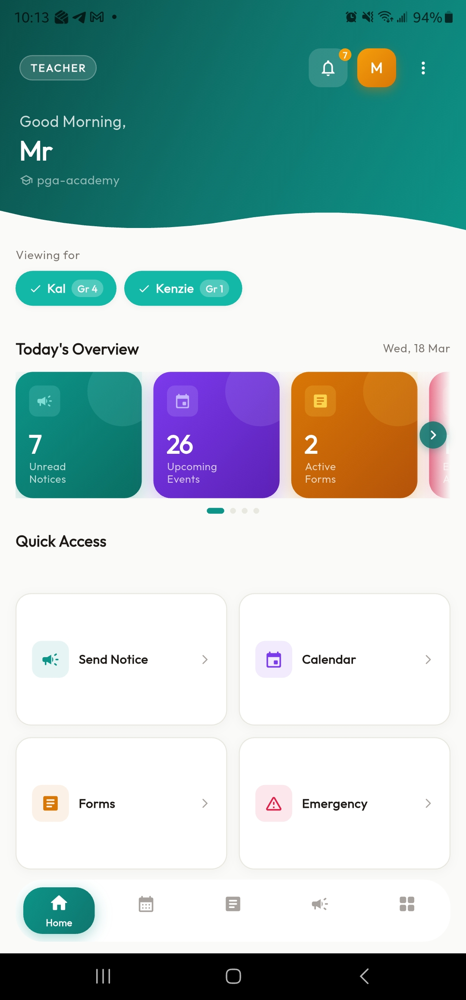
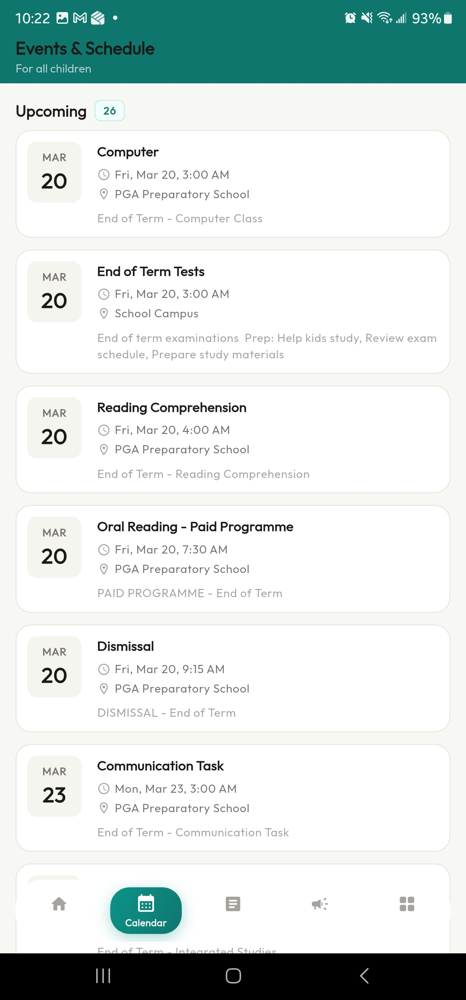
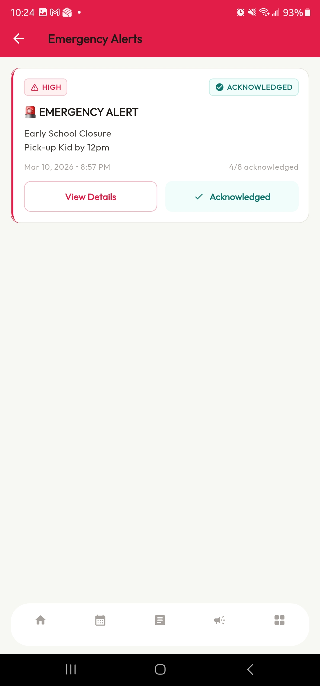

2026-04-02
SkoConnect Documentation v1.0 | Last updated: 2026-04-02
This guide covers everything you can do as a student in the SkoConnect mobile app. SkoConnect is your school’s communication hub — check it for notices, events, forms, and emergency alerts.
As a student, you can:
| Feature | What You Can Do |
|---|---|
| Home Screen | See a summary of your school day |
| Calendar & Events | View your school calendar |
| Notices | Read announcements from your school and teachers |
| Forms | Fill out and submit forms your teacher sends you |
| Emergency Alerts | Receive and acknowledge urgent broadcasts |
| Settings | Manage your profile and notification preferences |
You cannot create notices, events, or forms — those are managed by your school. Your role is to stay informed and respond when your teachers need something from you.
Each section below is self-contained — jump to any section without reading the whole guide.
SkoConnect is available for both iPhone and Android:
If this is your first time, the school may have given you a temporary password:
After logging in once, you can enable fingerprint or face login:
Tip: Your School Code was given to you by your school. If you don’t know it, ask your teacher or school office.
Tip: Biometric login is convenient, but remember your password in case you need to log in on a different device.
The Home screen is your personal dashboard. It shows a quick overview of what’s happening at your school.
The bottom of the screen has five tabs:
Swipe through each tab to see what’s there. You can always come back to the Home screen by tapping the Home tab.

The Routine tab shows your school calendar — events, exams, holidays, and activities.
When your school sets a reminder for an event, you’ll get a push notification before it starts. For example, you might get a reminder 1 hour before a parent-teacher conference or 1 day before an exam.
Note: You can only view events on the calendar. Your teachers and administrators create and manage all events.

Notices are messages from your school and teachers — exam schedules, event announcements, holiday reminders, and sports updates.
Notices are color-coded to help you find what matters:
| Category | Color | What You’ll See |
|---|---|---|
| School Announcement | Blue | General school news |
| Alert | Red | Important warnings |
| Exam | Blue | Test schedules and results |
| Event | Blue | Event reminders |
| Sports | Green | Sports news and schedules |
| Holiday | Purple | Holiday and closure dates |
Tip: Check the Notices tab at least once a day so you don’t miss anything important from your teachers.

Your teachers may send you digital forms — permission slips, surveys, consent forms, and more. When a form is assigned to you, it shows up in the Forms tab.
Under the Active section, tap a form to open it
Read the title and any instructions at the top
Fill in each field:
| Field Type | How to Answer |
|---|---|
| Text | Type a short answer (your name, class) |
| Type your email address | |
| Checkbox | Tap to check or uncheck |
| Dropdown | Tap to see options, then select one |
| Textarea | Type a longer answer (comments, notes) |
Fields marked with a red asterisk (*) are required — you can’t submit without filling them in
Tap Submit when you’re done
You’ll see a confirmation that your form was submitted
After submitting, find your form under the Closed section:
Tip: Don’t wait until the last minute. Submit forms as soon as you can so your teacher has time to process them.

Emergency alerts are urgent messages from your school — safety situations, weather closures, or other critical events. They’re marked with a red priority indicator and appear immediately.
If the school asks you to acknowledge the alert:
Responding helps your school know everyone is safe and informed.
| Priority | Color | Meaning |
|---|---|---|
| High | Red | Critical — immediate attention needed |
| Medium | Orange | Urgent — needs prompt attention |
| Low | Yellow | Important — needs awareness |
Important: Keep push notifications turned on for SkoConnect. Go to your phone’s Settings → find SkoConnect → enable Notifications. This ensures you get emergency alerts right away.

Update your information:
Control which notifications you receive:
Important: Keep Emergency notifications turned on at all times. This is how your school reaches you during emergencies.
Tip: Always log out if you’re letting someone else use your phone.
| Problem | Solution |
|---|---|
| Can’t log in | Double-check your School Code and email address. Tap Forgot Password to reset via email. Make sure you’re connected to the internet. |
| Don’t know my School Code | Ask your teacher or school office. The School Code was given to you when your account was created. |
| No notices showing | Pull down on the notices list to refresh. Check your internet connection. Ask your teacher if they’ve posted any notices. |
| App shows old information | Pull down to refresh. Close and reopen the app. If it’s still outdated, check your internet connection. |
| Can’t submit a form | Fill in all required fields (marked with *). If it still won’t submit, close and reopen the form. Try again. |
| Not getting notifications | Go to your phone’s Settings → SkoConnect → enable Notifications. Also check inside the app under More → Notification Settings. |
| Submitted the wrong answers | Contact your teacher right away. They may be able to help you resubmit. |
| Biometric login not working | Make sure it’s turned on under More → Privacy & Security. Also check that your phone has fingerprint or face recognition set up. |
Q: Can I create notices or events? A: No — students can only view notices and events. Your teachers and school administrators create and manage all content.
Q: Can my parents see my forms? A: Forms are sent to the person they’re addressed to. If a form is sent to you, your parents won’t see it unless the school also sends a copy to them. Permission slips and consent forms are usually sent to parents directly.
Q: How do I change my profile information? A: Go to More → Profile Settings. You can update your phone number and email address there.
Q: What happens when a form closes? A: Closed forms move to the Closed section of the Forms tab. You can view your submitted answers but can’t make changes. If you missed a deadline, talk to your teacher.
Q: How do I turn on fingerprint or face login? A: Go to More → Privacy & Security and enable biometric login. You’ll also need fingerprint or face recognition set up in your phone’s system settings.
Q: Is the app free? A: Yes. SkoConnect is provided by your school at no cost to you. You just need an internet connection.
Q: Can I use the app on a tablet or computer? A: Currently, SkoConnect is designed for phones only. It works on iPhones and Android phones.